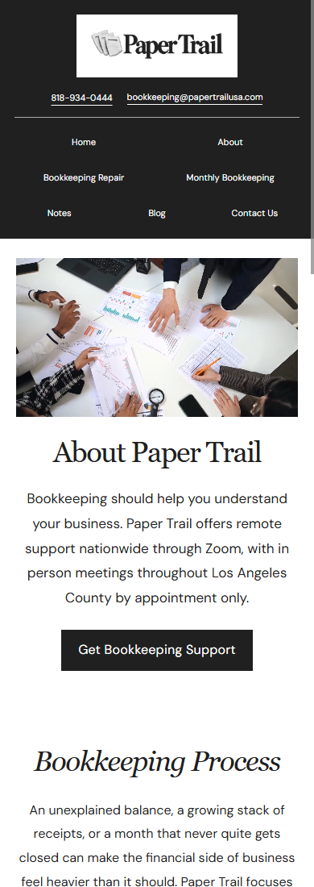
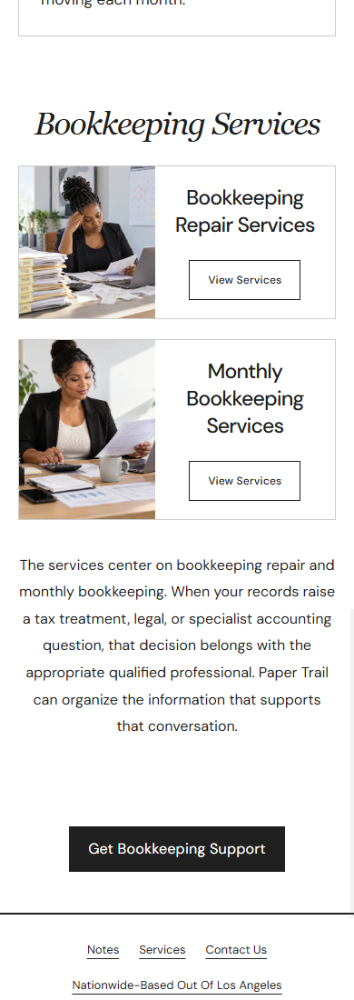
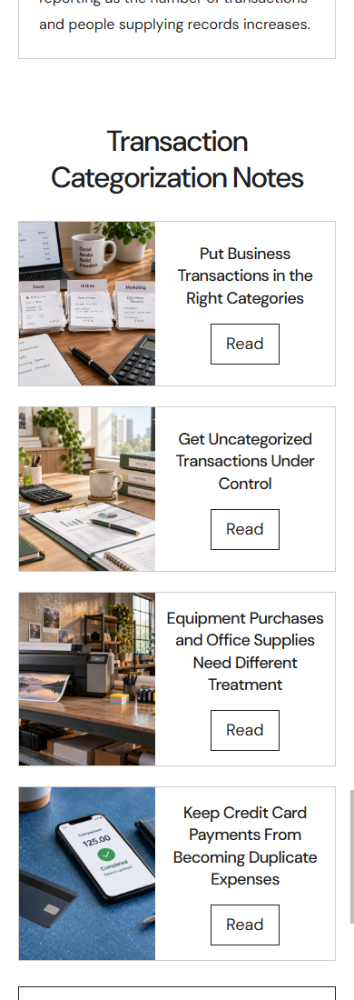
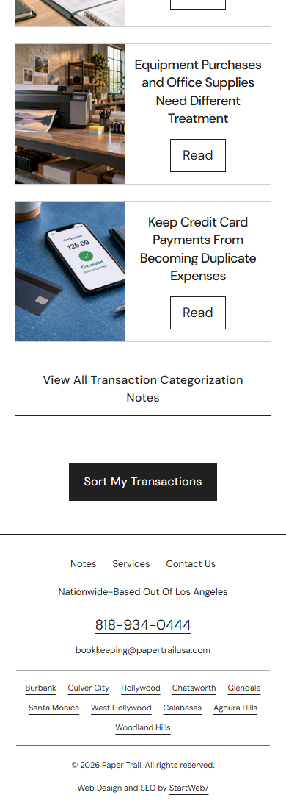
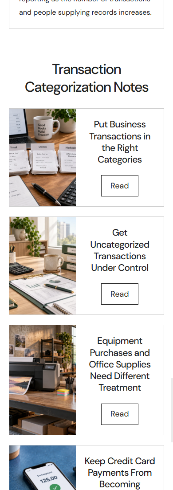

Mobile refinements
Mobile menu service names have a wider row so Bookkeeping Repair and Monthly Bookkeeping stay on one line. Bottom actions, contact information, Notes reading titles and Blog dates are centered. Service Notes use compact side by side cards with edge to edge photos. About service photos fill their image areas. The Home Notes layout is preserved, with only the Business Expenses photo reframed.
The shared wording is exactly: Nationwide-Based Out Of Los Angeles. All other new CSS is restricted to screens 650 pixels wide or narrower.
All 192 website pages were checked at phone width, with additional checks at 320, 430, 834 and 1440 pixels. Desktop comparisons found only the requested Nationwide wording changes. Card images fill their frames, bottom actions and targeted titles are centered, and no overflow or missing images were observed.











Desktop preservation
The saved before and after measurements are compared element by element. Only the explicitly requested Nationwide wording may differ. Desktop and iPad screenshots remain available below.
Previous phone view

No Google API requests, form submissions, commits, pushes, or publication.